- note on duplicate and missing cases
lindbrook
2019-01-04
Source:vignettes/notes/duplicate.missing.cases.notes.Rmd
duplicate.missing.cases.notes.RmdDuplicate Cases: Cambridge Street
The three pairs of duplicates lie at two different locations on opposite sides of Cambridge Street:
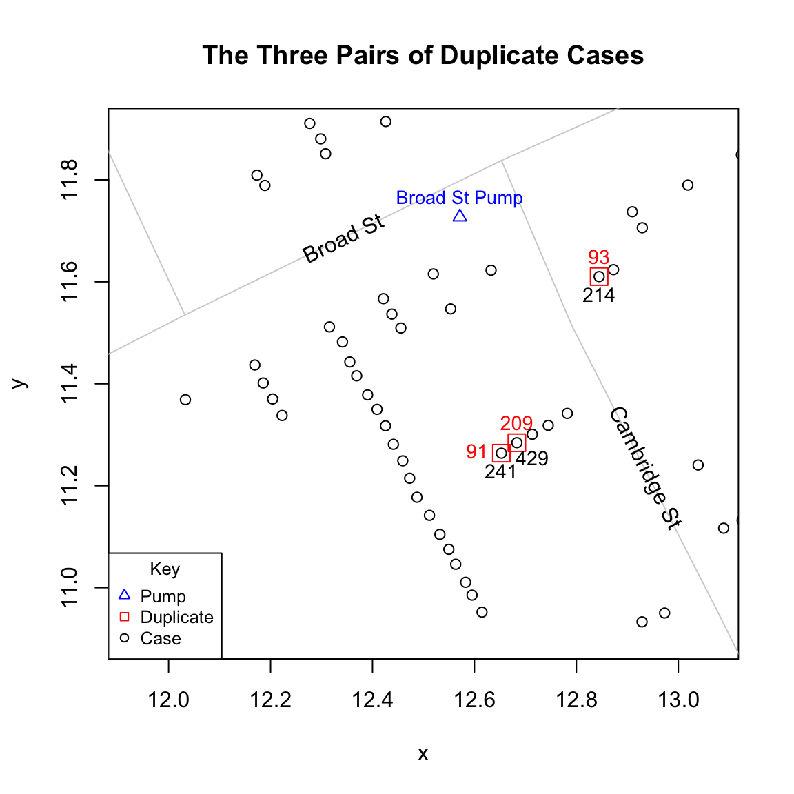
Missing Cases: Broad Street
40 Broad Street, which lies just southwest (below and to the left) of the Broad Street Pump, is the location of two of the “missing” cases.
Snow’s map shows four “bars” or cases:

But Dodson and Tobler’s data show only two, cases 32 and 122. Furthermore, the two cases also appear to be farther apart than what we see in nearby stacks:
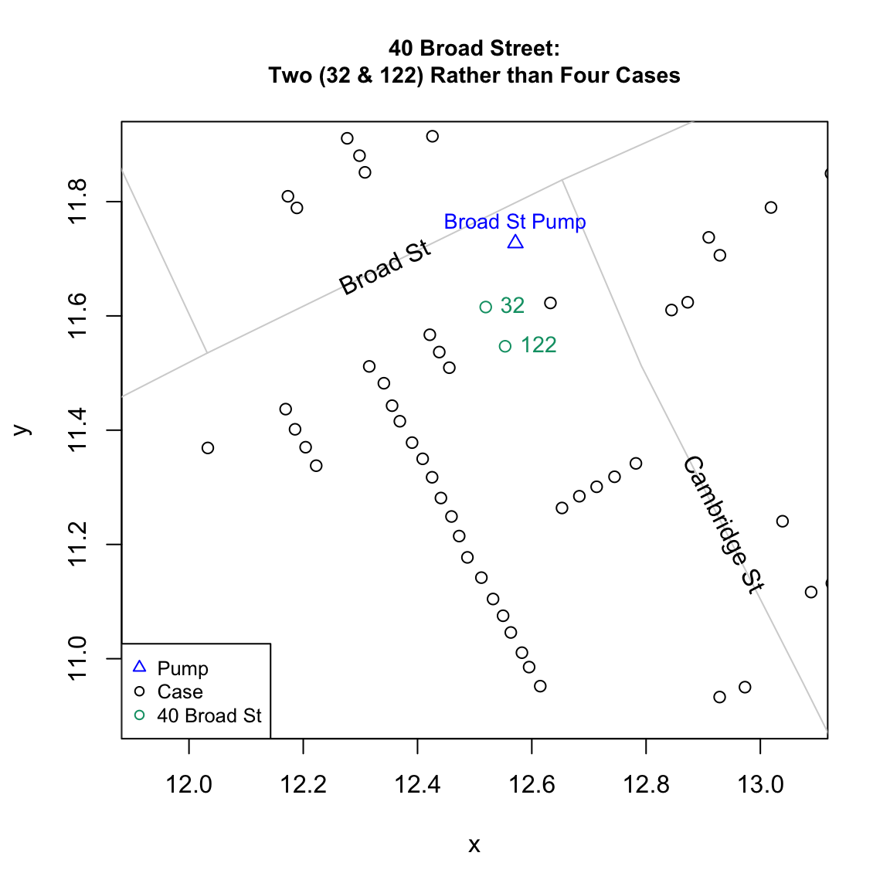
Missing Cases: Noel Street
15 Noel Street, which lies north of Broad Street one block south of Oxford Street at the intersection with Berwick Street, is the location of the third “missing” case.
Snow’s map shows three cases at the end of Noel Street:

But Dodson and Tobler’s data shows only two cases: 282 and 422. They also appear to be farther apart than what we see in nearby stacks:
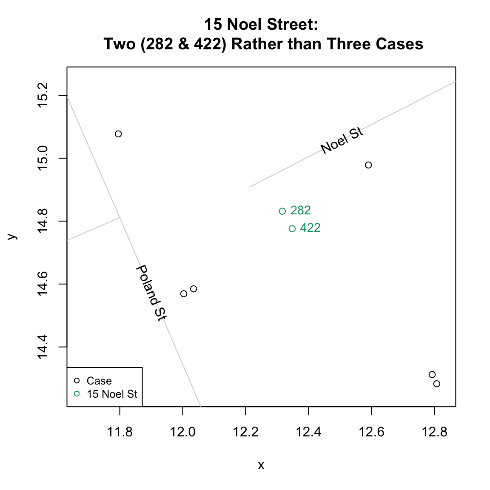
A Solution
One solution to these problems is to use the three duplicate observations from Cambridge Street to fill in for the three “missing” observations on Broad and Noel Streets. This is both plausible and reasonable.
What makes it plausible is that with the exception of the x-y coordinate of the case at the base of a stack, the remaining coordinates, which make up 44% (257/578) of all bars and which include the proposed locations for the three “missing” observations, do not represent the location of a case. They only serve to align bars within a stack. For this reason, there should be no objections to moving this class of bars.
What makes it reasonable is that I do not relocate bars by hand. Instead, I use simple geometric interpolation. I use existing observations in a stack to determine the “standard” unit distance between bars and then use multiples of that unit distance to position “missing” observations.
Consider 40 Broad Street. On Snow’s map, there are four cases but in Dodson and Tobler there are just two. Visual inspection leads me to make three claims: 1) the distance between the two observed cases, 32 and 122, is greater than that at neighboring stacks; 2) there appears to be room for one “missing” case between 32 and 122; and 3) the other “missing” case should be located just beyond case 122.
The proposed coordinates are illustrated below:
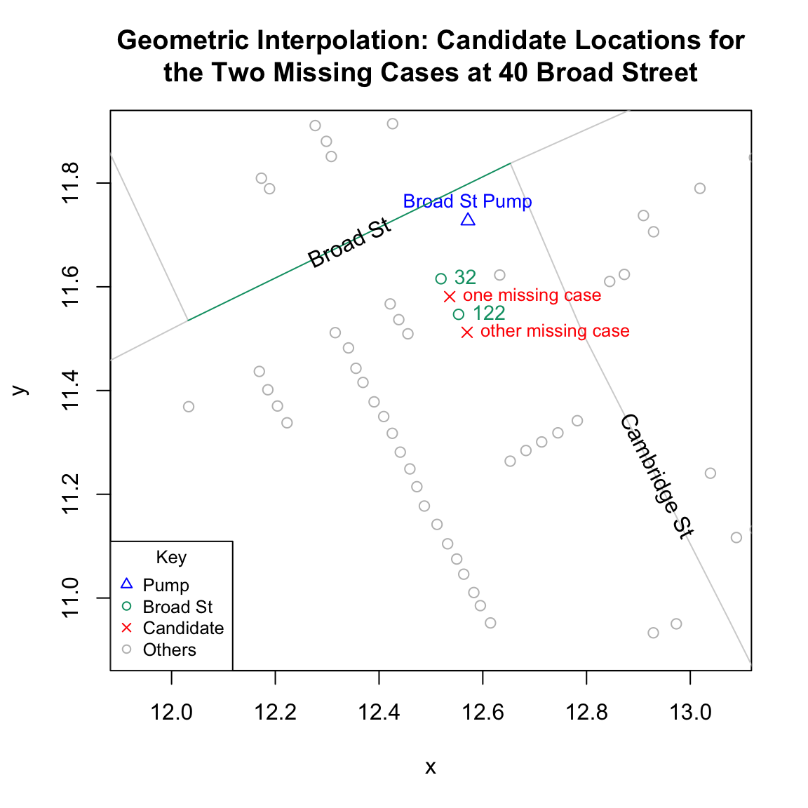
Geometric interpolation: unit distance
To explain how I got these coordinates, I illustrate the computation of the unit distance in one dimension and then move to the two dimensional case.
I use 40 Broad Street as the example. I rotate the data so that the stack lies along a single (horizontal) dimension. To fit one “missing” case between cases 32 and 122, I set the unit distance between the two observed cases to 2:
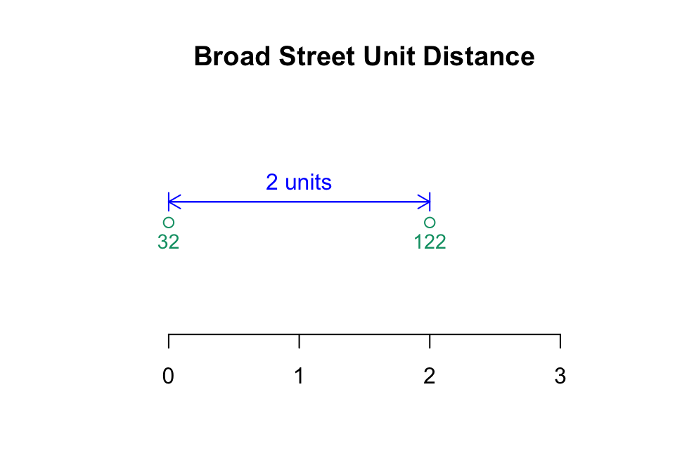
I then place one “missing” case 1 unit away from 32:
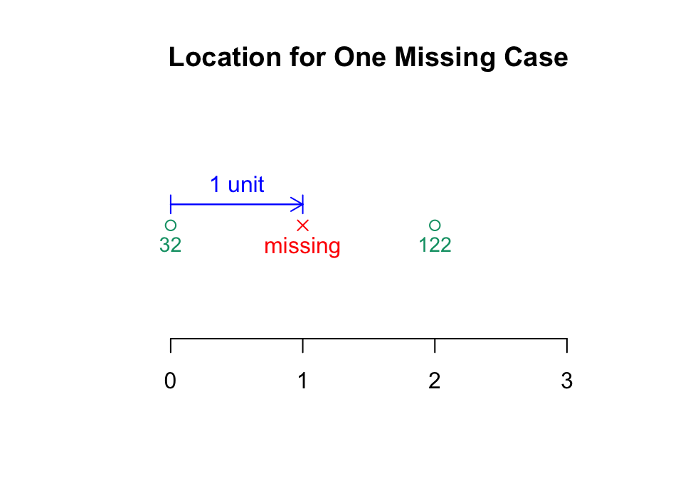
And place the other “missing” case three units away:
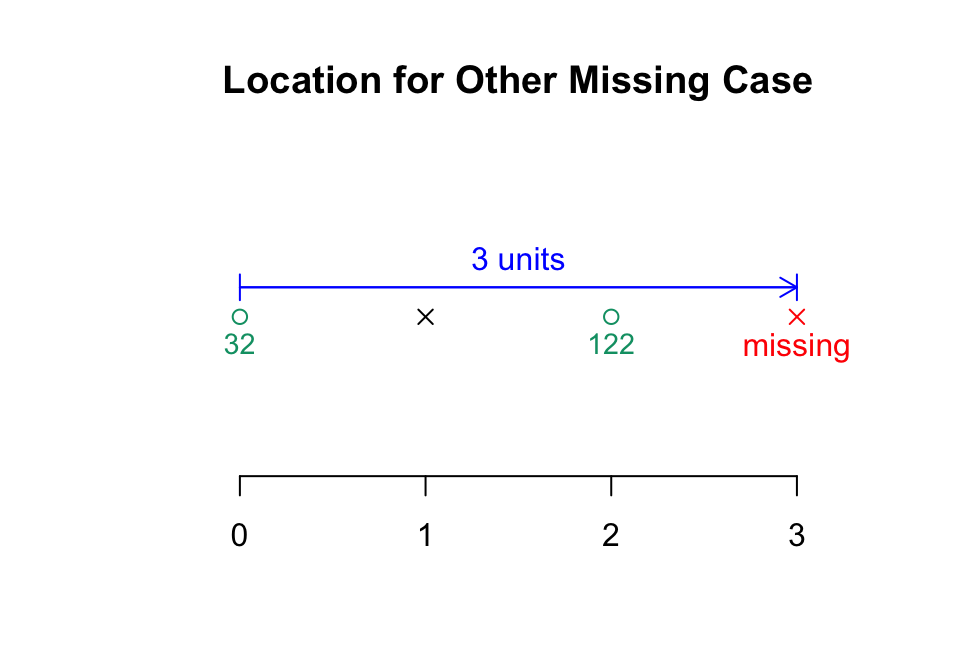
Geometric interpolation: in 2 dimensions
Because stacks lie in two dimensional space and because we need to respect geographical features like roads, the actual interpolation is a bit more complicated.
Consider the example of the “missing” observation that lies between cases 32 and 122. Just as with the one dimensional example, the “missing” observation should be located one unit away from case 32. The difference in two dimensions is that it needs to be located one unit away from case 32 (at the red “x”) as measured along the line that runs through the stack’s axis (black dotted line).
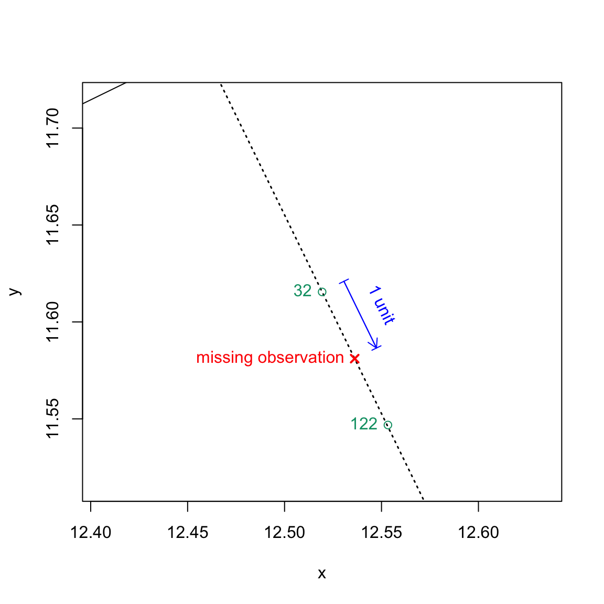
To compute the coordinates for the “missing” case, I find the points of intersection between a circle and line. The circle is simple: its center is the case or reference point (case 32), and its radius is the desired multiple of the unit distance, which is 1 in this example. The line is more complicated: it’s the line that runs through the stack’s axis.
What makes the line complicated is that the bars in the stacks in Dodson and Tobler are generally not perfectly aligned. To ensure that there is only one unique axis for any stack, I impose two constraints: 1) a stack must lie along an axis that is orthogonal to the road (line segment) where the stack is located1; and 2) the axis must pass through the reference point, the bar at the base of the stack (i.e., the bar closest to the stack’s home road segment).
As a consequence, the line drawn through the stack’s axis will pass through the circle’s center:
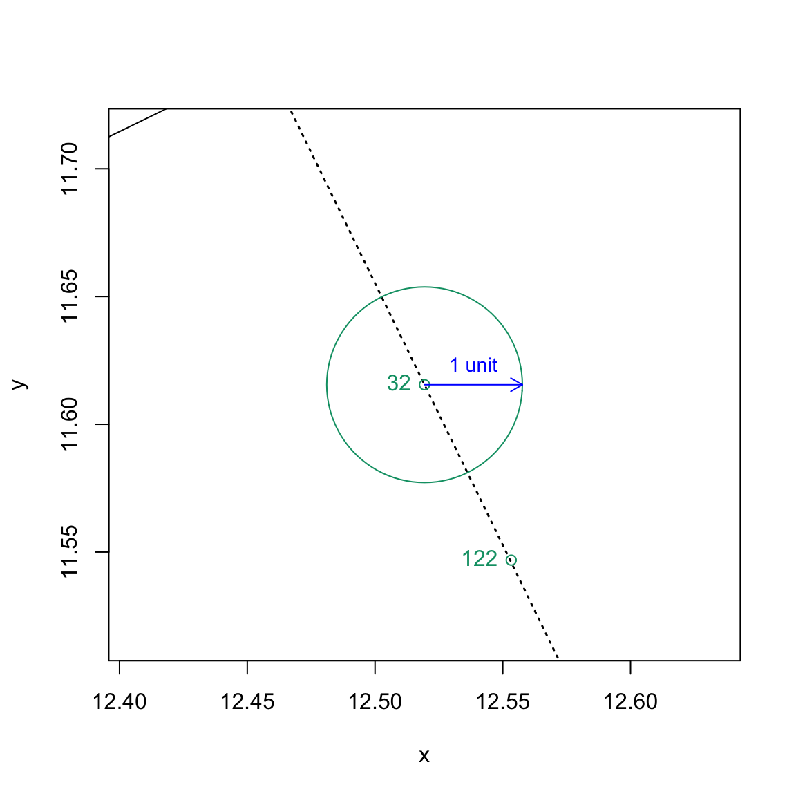
There will always be two points of intersection (red squares):
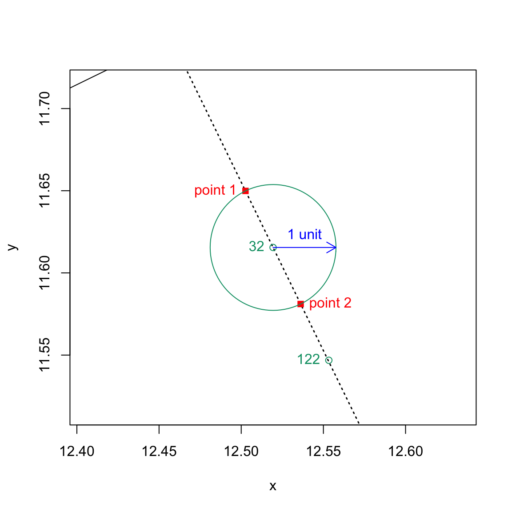
So, finding the coordinates of the “missing” observations boils down to solving a quadratic equation and picking the appropriate solution.
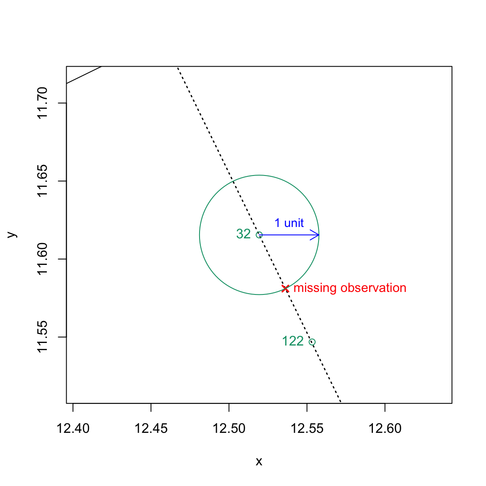
I do so using with the formulas below:
# Equation of line for the "home" road segment
# "segment" is the numeric ID of one of the 528 sets of line segments in Dodson and Tobler
segmentOLS <- function(segment) {
lm(y ~ x, data = street.list[[segment]])
}
# Slope for orthogonal stack axis
orthogonalSlope <- function(segment) {
ols <- segmentOLS(segment)
-1 / coef(ols)[2]
}
# Intercept for orthogonal stack axis
# "case" if the reference point of a stack
orthogonalIntercept <- function(case, segment) {
Snow.deaths[case, "y"] - orthogonalSlope(segment) * Snow.deaths[case, "x"]
}
# unit distance is a function of the Euclidean distance between "case1" and "case2"
unitDistance <- function(case1, case2) {
dist(Snow.deaths[c(case1, case2), c("x", "y")])
}
# Quadratic equation
quadratic <- function(a, b, c) {
root1 <- (-b + sqrt(b^2 - 4 * a * c)) / (2 * a)
root2 <- (-b - sqrt(b^2 - 4 * a * c)) / (2 * a)
c(root1, root2)
}
# Geometric interpolation
# "multiplier" scales and defines the unit distance
interpolatedPoints <- function(case1, case2, segment, multiplier = 0.5) {
p <- Snow.deaths[case1, "x"]
q <- Snow.deaths[case1, "y"]
radius <- multiplier * unitDistance(case1, case2)
m <- orthogonalSlope(segment)
b <- orthogonalIntercept(case1)
A <- (m^2 + 1)
B <- 2 * (m * b - m * q - p)
C <- (q^2 - radius^2 + p^2 - 2 * b * q + b^2)
quadratic(A, B, C)
}Proposed coordinates
Using this approach, I get the following results. For the two “missing” cases at 40 Broad Street, I move two duplicates, cases 91 and 93, from Cambridge Street:
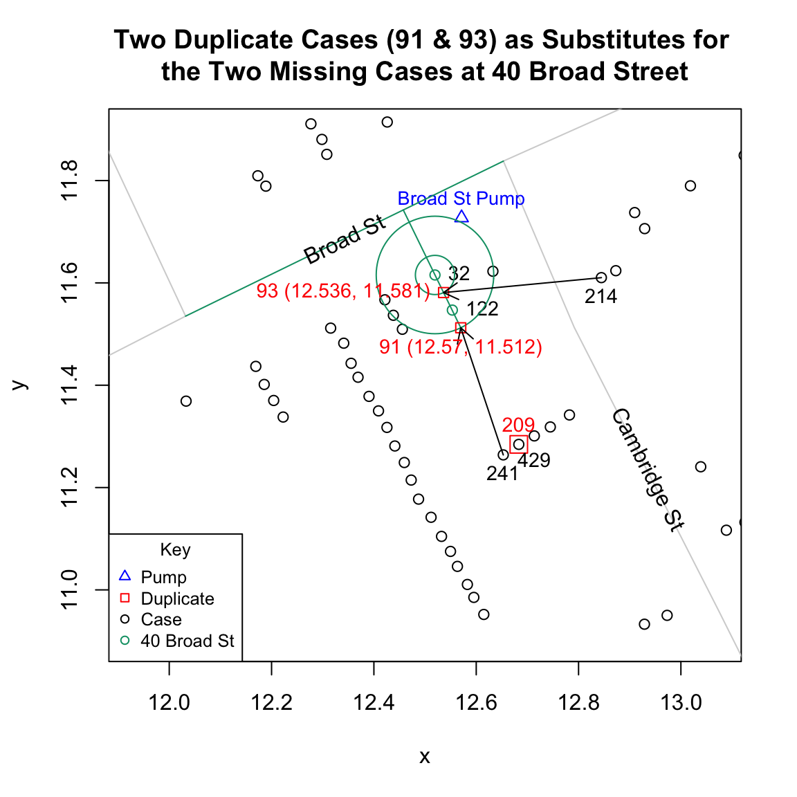
For the missing case at 15 Noel Street, I move the remaining duplicate, case 209, from Cambridge Street:
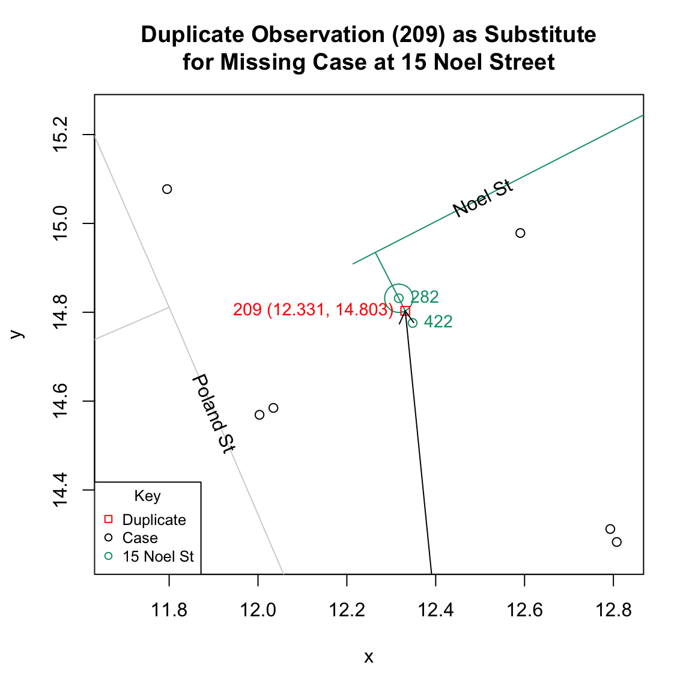
For an explanation on how the home road segment is identified, see the “‘Unstacking’ Bars” vignette.↩